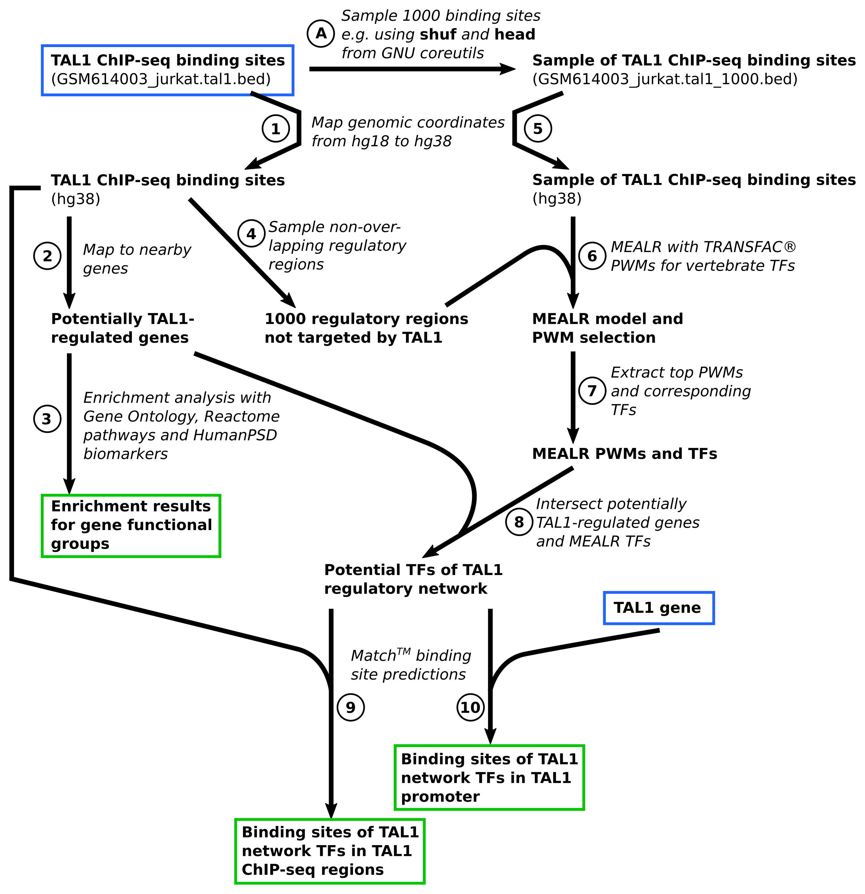

Overview of the analysis workflow
The main tutorial example is a workflow to infer possible components of a gene regulatory network on the basis of ChIP-seq data. The workflow is depicted in Figure 2. Starting point of the analysis is the BED file containing genomic locations of TAL1-bound regions in Jurkat cells discovered and published by Palii et al.. The GEO repository hosts the ChIP-seq data of the study under series accession GSE25000. The tutorial focuses on the TAL1-bound genomic locations reported by the study authors which can be downloaded here.
Source code that implements the workflow is provided for geneXplainR and the Java API. The corresponding JSON configuration file for the exec commandline interface can be found here.
Workflow steps
Step A. Sampling TAL1 binding sites
In a preparatory step we extracted a sample of 1000 TAL1 bound regions for subsequent MEALR analysis. The sample was drawn using the shuf and head programs from GNU coreutils. The file GSM614003_jurkat.tal1_1000.bed containing the sampled sites is part of the material for this tutorial.
Step 1. Import and mapping of TAL1-bound genomic regions
Step 1 imports the BED file with TAL1-bound genomic regions into the platform workspace. Since the genomic regions reported in the original study referred to human genome sequence version hg18, we then use the Galaxy tool Lift over to convert the hg18 coordinates to hg38.
Step 2. Mapping TAL1-bound genomic regions to nearby genes
Step 2 assigns the hg38 coordinates of TAL1-bound regions with nearby genes using the platform tool Track to gene set.
Step 3. Functional enrichment analysis of genes near TAL1-bound regions
Genes located in the vicinity of TAL1 binding sites are analyzed for enrichment of certain functions on the basis of Gene Ontology annotation, Reactome pathways, as well as for enrichment of known human disease biomarkers annotated in the HumanPSD. This is done using the Functional classification platform tool. Please note that the HumanPSD biomarker resource requires a license.
Step 4. Sampling genomic regions not bound by TAL1
MEALR requires a background set of genomic regions to find a discriminating pattern of PWM scores. The platform tool Create random track samples regions around transcription start sites of genes that do not overlap with an input set of genomic regions, in this case the study set of TAL1 binding sites, and with the same length distribution.
Step 5. Import and mapping of TAL1 binding site subset
The set of TAL1 binding sites sampled in Step A represents the target set of genomic regions which we import and convert to hg38 coordinates as in Step 1.
Step 6. Selection of important PWM models using MEALR
The target and background set of genomic coordinates prepared in the previous two steps are analyzed with MEALR (tracks) using TRANSFAC® PWMs from the profile vertebrate_human_p0.05_non3d. This profile contains PWM models defined for vertebrate transcription factors omitting those that have been derived theoretically on the basis of molecular structures of protein-DNA complexes using 3DTF.
Step 7. Extraction of binding transcription factors
Possible co-binding factors are obtained by firstly selecting the top 50 PWMs with positive model coefficients using the Select top rows tool followed by extracting corresponding transcription factor genes using the Matrices to molecules tool.
Step 8. Intersection of potentially TAL1-regulated genes and MEALR TFs
The gene regulatory network workflow is completed by intersecting the transcription factors identified by MEALR with potentially TAL1-regulated genes (Step 2) using the Venn diagrams tool. The resulting set of transcription factors are inferred to be both regulatory targets of TAL1 as well as co-regulators.
Step 9. Prediction of binding sites of identified TFs in TAL1-bound genomic regions
In order to conduct the last two steps of the tutorial workflow we prepare a list of PWMs representing TFs identified in Step 8 and, after its import into the platform workspace, create a corresponding PWM profile using the Create profile from site model table tool. The score cutoffs are taken from the vertebrate_human_p0.001_non3d profile which adjusts scores to a p-value of 0.001 estimated for a sequences with the same dinucleotide composition as human promoter regions. The profile for GRN transcription factors is then used to predict precise binding locations of these transcription factors within TAL1 ChIP-seq regions using the TRANSFAC(R) Match(TM) for tracks tool.
Step 10. Prediction of binding sites of identified TFs around TAL1 transcription start site
Binding sites for inferred TFs are furthermore predicted in the genomic region around the TAL1 transcription start site. As the study ChIP-seq regions did not contain a TAL1-bound region near the TAL1 gene, we import a simple table containing the TAL1 Ensembl id and extract the region around the TSS using the Gene set to track tool, followed by Match analysis of the sequence as in Step 9.
Figure 2. Workflow overview

Scientific results of the tutorial workflow
According to the output table named MEALR_positive_coefficients MEALR assigned highest coefficients to TAL1 PWM models (V$TAL1_05 and V$TAL1GATA1_02). and binding factors of important PWMs, such as Runt and GATA motifs, coincide with those reported in the original publication. The TAL1-regulatory network inferred by the workflow includes the transcription factors ERG, GATA2, LEF1, MAX, MYB, RUNX1, RUNX2 and TCF7. GATA2, TAL1 and ERG have been reported as components of a regulatory circuit by Thoms et al.. The regulatory link between RUNX1 and MYB in leukemia has been described by Choi et al. and the importance of MYB for leukemic pathology has been elaborated on by Zuber et al..